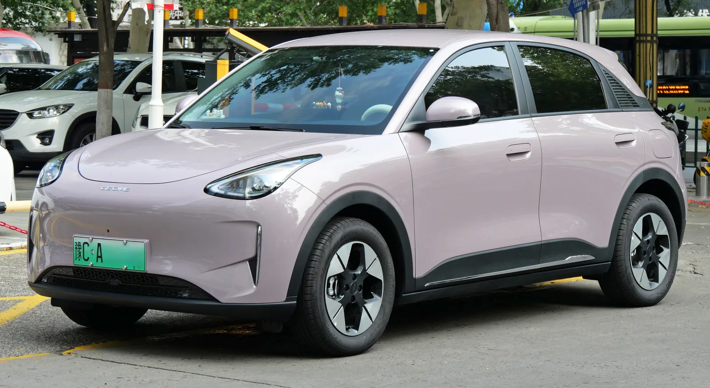
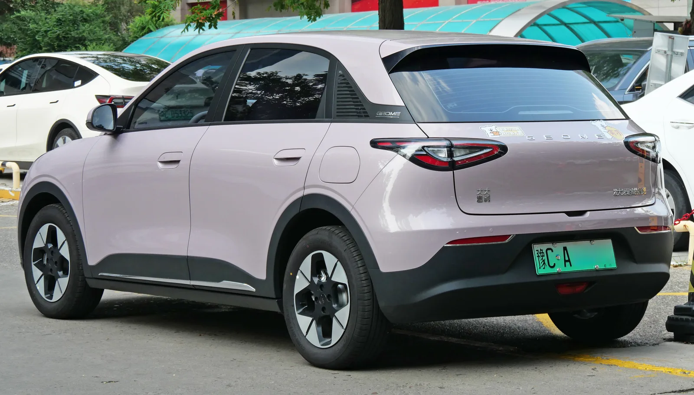
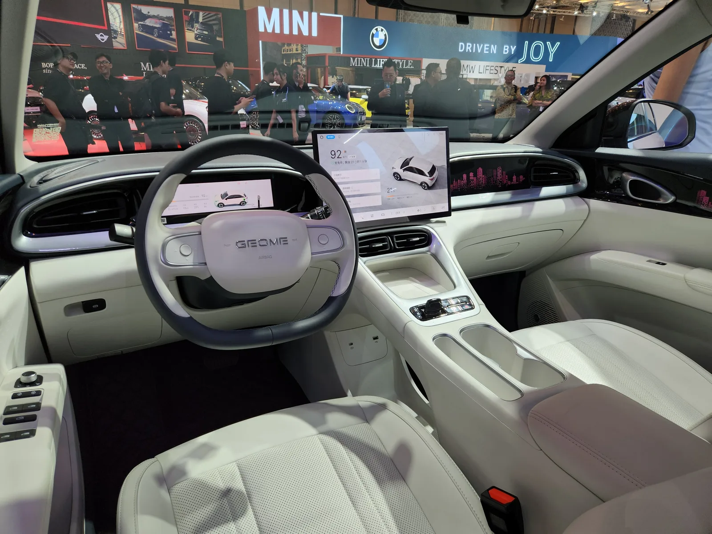
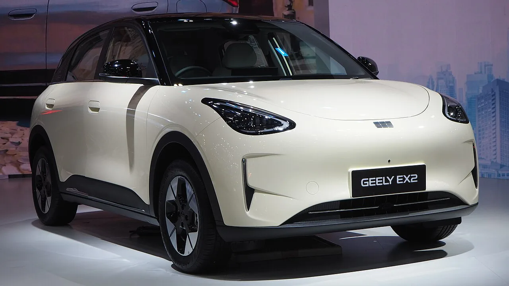
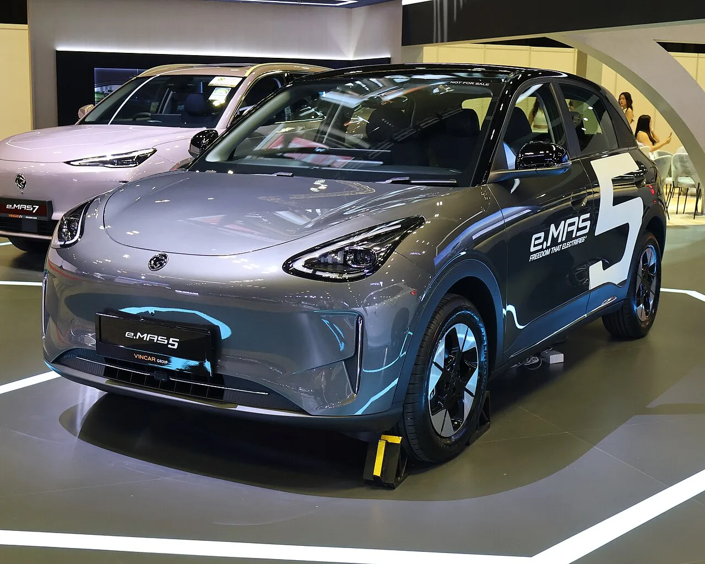
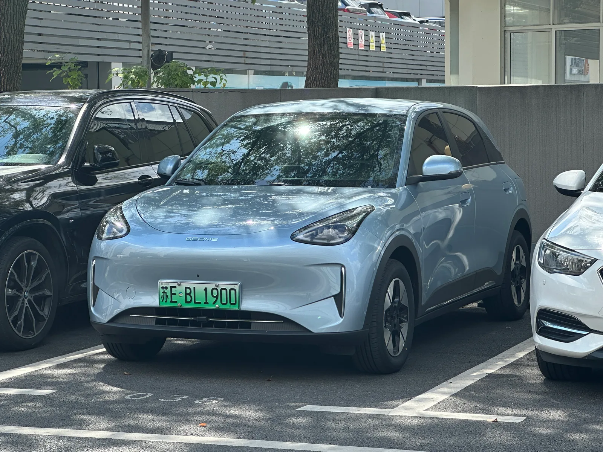

▲ 지리 E2. 중국 내수명은 싱위안, 수출명은 EX2로 모두 같은 차다. 유로NCAP·ANCAP에서 별 5개를 받았다 ⓒ Wikimedia Commons (CC BY-SA 4.0)
지리자동차의 소형 전기차 E2가 유로NCAP과 호주 ANCAP에서 각각 최고 등급인 별 5개를 받았다. 두 기관의 평가를 동시에 통과한 것으로, 중국 브랜드가 소형 전기차로 유럽·호주 시장의 안전 문턱을 함께 넘었다는 점에서 눈여겨볼 만하다.
1. 작은 차의 별 다섯이 어려운 이유

▲ 지리 E2 후면. 전장 4,135mm의 소형 차급이다 ⓒ Wikimedia Commons (CC BY-SA 4.0)
충돌 안전 평가에서 작은 차는 구조적으로 불리하다. 충격을 흡수할 공간(크럼플 존)이 짧고, 무게가 가벼워 충돌 시 받는 감속도가 크기 때문이다. 게다가 유로NCAP과 ANCAP은 2026년부터 평가 체계를 전면 개편해, 기존의 성인·어린이 탑승자, 보행자 보호, 안전 보조 네 갈래를 안전 운전(Safe Driving)·사고 회피(Crash Avoidance)·충돌 보호(Crash Protection)·사고 후 안전(Post-Crash Safety)이라는 새 네 단계로 바꿨다. 별 5개의 문턱도 그만큼 높아졌다. 전장 4,135mm급 차량이 별 5개를 받았다는 것은 차체 구조와 안전 보조 시스템을 모두 일정 수준 이상 갖췄다는 의미다.
2. GEA 플랫폼과 글로벌 전략

▲ 지리 E2 실내. GEA 플랫폼을 기반으로 30개국 이상에 판매되고 있다 ⓒ Wikimedia Commons (CC BY-SA 4.0)
E2는 지리가 전동화 전용으로 개발한 GEA 플랫폼을 기반으로 한다. 후륜구동 방식이며, 58~85kW(78~114마력) 영구자석 동기 모터에 CATL제 LFP 배터리 30.12~47.14kWh를 조합해 CLTC 기준 310~480km를 낸다. 이 차는 이미 30개국 이상에서 누적 80만 대 넘게 팔렸고, 최근 호주·영국·프랑스 등 주요 시장에 순차 진출했다. 안전 등급은 유럽과 호주에서 판매를 확대하는 데 사실상 필수 조건에 가깝다.
같은 차, 다른 이름 E2는 시장마다 이름이 다르다. 중국 내수에서는 싱위안(星愿), 수출용 통합 명칭은 EX2, 유럽과 남아프리카공화국에서는 E2, 말레이시아·싱가포르에서는 지리 계열사인 프로톤을 통해 e.MAS 5로 팔린다. 이름만 다를 뿐 같은 차다. 싱위안은 2025년 중국에서 전기차뿐 아니라 모든 차종을 통틀어 판매 1위에 오른 모델이기도 하다.

▲ 수출명 'GEELY EX2'로 전시된 같은 차. 중국 내수명은 싱위안이다 ⓒ Chanokchon, Wikimedia Commons (CC BY-SA 4.0)
3. 항목별 점수 — 사고 후 안전에서 95%
▲ 중국 도로 위의 싱위안. 수출 시장에서는 E2·EX2로 팔리는 같은 차다 ⓒ Wikimedia Commons (CC0)
유로NCAP이 공개한 2026년형 평가 결과에서 E2는 네 단계 모두 고르게 점수를 받았다. 특히 사고 후 구조·화재 위험 관리를 보는 사고 후 안전에서 95%를 기록했다. 시험 차량은 좌핸들 사양의 E2 울트라(Ultra) 해치백이었다.
| 평가 단계 | 점수 | 내용 |
|---|---|---|
| 안전 운전(Safe Driving) | 79% | 운전자 상태 감시, 차선 유지 보조 |
| 사고 회피(Crash Avoidance) | 72% | 자동 긴급제동, 저속 충돌 회피 |
| 충돌 보호(Crash Protection) | 86% | 정면·측면 충돌 시 탑승자 보호 |
| 사고 후 안전(Post-Crash Safety) | 95% | 구조 접근성, 배터리 절연·화재 위험 |
※ 유로NCAP 2026년형 평가 기준. ANCAP도 같은 4단계 체계를 쓰며 안전 운전 79%로 동일하게 공개했다.
ANCAP은 별도 발표에서 "E2의 충돌 호환성이 인상적"이라고 평가했다. 엔진이 없어 앞쪽에 확보된 크럼플 존이 넓고, 차체가 작아 상대 차량에 주는 충격도 작다는 것이다. 작은 전기차라는 조건이 오히려 유리하게 작용한 셈이다.
유로NCAP 공식 리포트는 아래에서 확인 가능하다. 유로NCAP 리포트 바로가기
4. 잘한 곳과 아쉬운 곳

▲ 말레이시아·싱가포르에서는 프로톤 e.MAS 5로 팔린다. 역시 E2와 같은 차다 ⓒ S5A-0043, Wikimedia Commons (CC BY 4.0)
유로NCAP은 강점으로 물리 버튼을 남긴 조작계와 기본 적용된 어린이 잔류 감지(Child Presence Detection)를 꼽았다. 앞좌석 탑승자끼리의 충돌을 막는 센터 에어백도 기본이고, 사고 후 구조대가 탑승자를 빼내는 항목에서는 만점을 받았다. 차선 변경까지 지원하는 조향 보조도 높은 평가를 받았다.
반대로 지적된 부분도 있다. 정면 부분 오프셋 충돌에서 운전자 다리 부상 위험이 높게 나왔고, 10세 어린이 더미에서 안전벨트가 미끄러지는 현상이 관찰됐다. 보행자 머리 보호는 앞유리 영역에 한정됐고, 자동 긴급제동은 저속 교차 상황과 페달 오조작 시나리오에서 일관성이 떨어졌다. 차선 이탈 경고의 운전자 수용성 점수도 40%에 그쳤다.
5. 국내 출시는?

▲ 지리 E2. 국내 출시 여부는 확인되지 않았다 ⓒ Wikimedia Commons (CC0)
E2의 국내 출시 여부는 확인되지 않았다. 다만 국내 전기차 시장에서 BYD가 승용 브랜드로 자리를 잡아가는 흐름을 감안하면, 중국 브랜드의 소형 전기차가 추가로 들어올 가능성 자체를 배제하기는 어렵다. 그 경우 이번 안전 등급은 소비자 인식에 영향을 주는 근거로 쓰일 수 있다.
6. 정리
체크포인트
- 지리 E2가 유로NCAP·ANCAP 동시 별 5개를 받았다.
- 전장 4,135mm 소형 차급이라는 점에서 의미가 있다.
- 유로NCAP 항목별 점수는 안전 운전 79% · 사고 회피 72% · 충돌 보호 86% · 사고 후 안전 95%다.
- 중국 내수명 싱위안, 수출명 EX2, 프로톤 e.MAS 5가 모두 같은 차다.
- 국내 출시 계획은 확인되지 않았다.